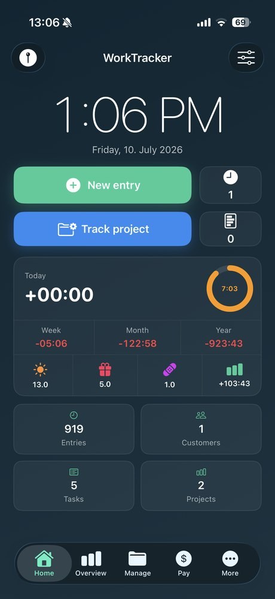
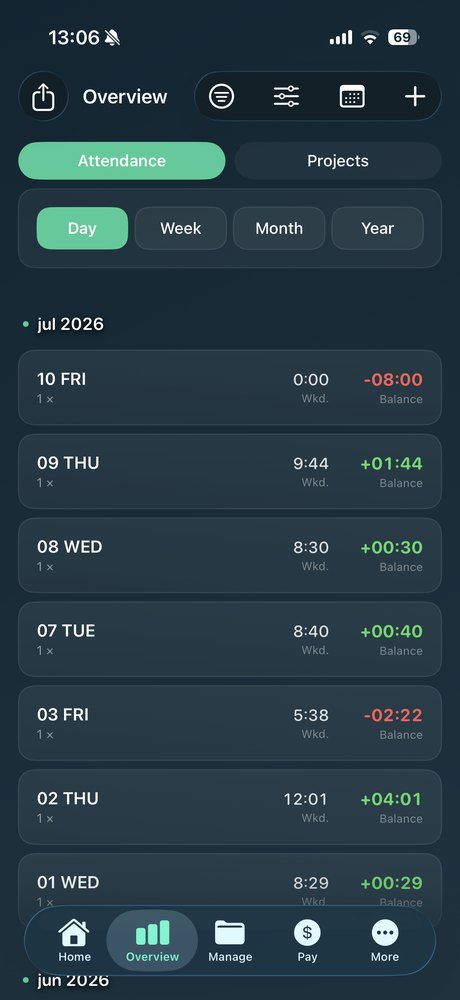
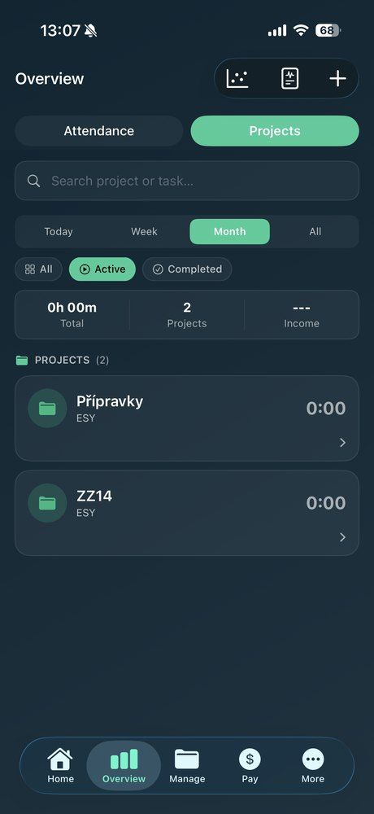
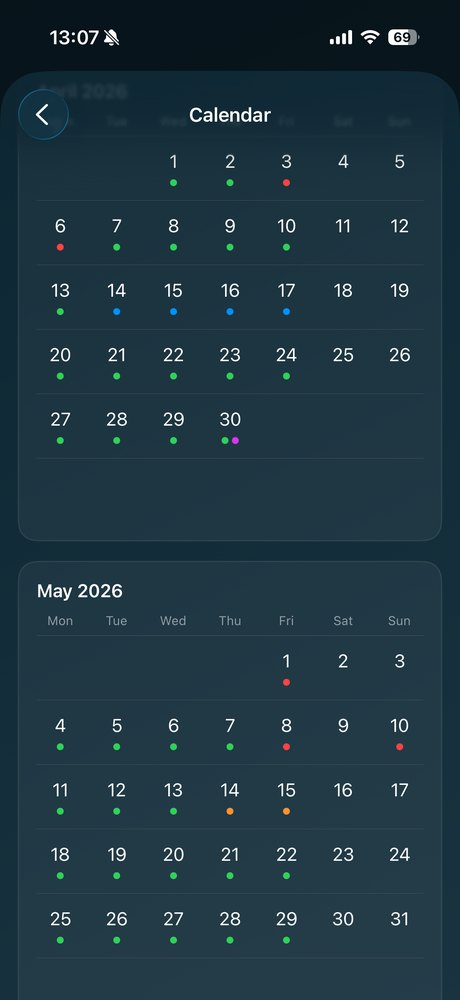
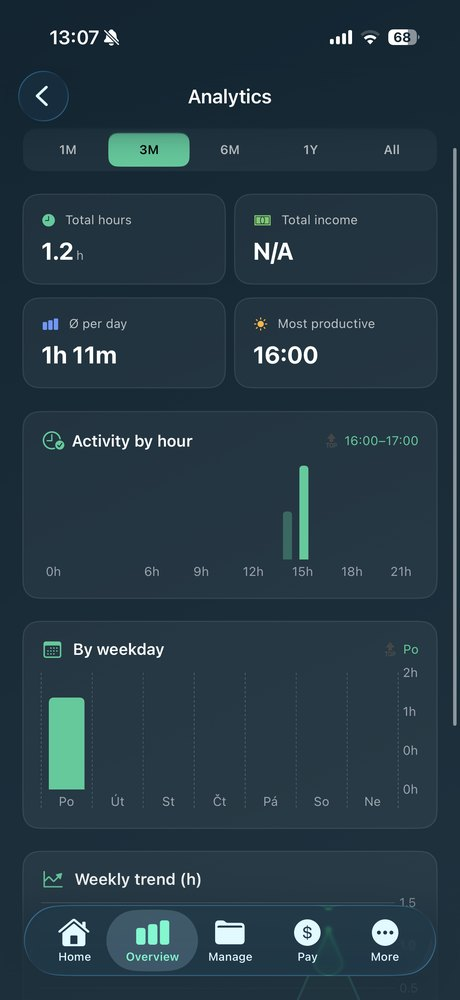
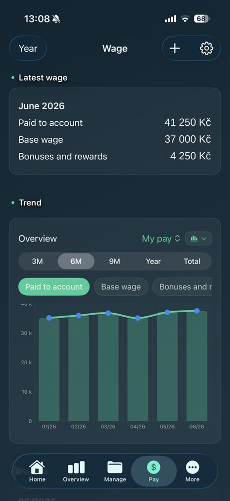

Sleduj pracovní dobu, přesčasy a výdělek — jedním ťuknutím nebo automaticky podle místa. Celé v iPhonu, bez účtu.






Docházka se spustí a zastaví sama, když přijdeš nebo odejdeš z práce. Vybereš, jestli šlo o služební nebo soukromou cestu.
Běžící čas vidíš na zamčené obrazovce i v Dynamic Islandu — bez otevírání appky.
Bilance přesčasů, barevná heatmapa a grafy produktivity. Vždy víš, kde stojíš.
Hodinová sazba, přesčasové příplatky a historie výplat. Víš přesně, co sis vydělal.
Profesionální faktura za pár sekund. QR kód pro okamžitou platbu — klient zaplatí jedním skenem.
Data zůstávají v tvém iPhonu. Žádný server, žádná registrace, žádné sledování.
Roční předplatné: 1 190 Kč/rok · Nákup a správa přes App Store
Ano — základní funkce (docházka, hodiny, přesčasy, geofencing, Dynamic Island, widgety) jsou zdarma bez omezení. Pro odemkne projekty, klienty, faktury, CSV export, mzdu a zálohy.
Výhradně do tvého iPhonu. Worxly nemá server a nikam data neodesílá. Volitelné zálohy jdou do tvého vlastního iCloud Drive.
Uložíš pracovní místo na mapě, povolíš polohu „Vždy" a zapneš automatické zaznamenávání. Appka pak sama rozpozná příchod a odchod. Poloha se zpracovává jen v zařízení.
Ano — v Nastavení → Apple ID → Předplatná. Přístup k Pro trvá do konce zaplaceného období.
Ano, plně offline. Internet je potřeba jen pro nákup Pro a zálohy do iCloudu.
Máš dotaz, nápad nebo narazil jsi na problém? Ozvi se — odpovídám osobně.
fotr.dev@gmail.com